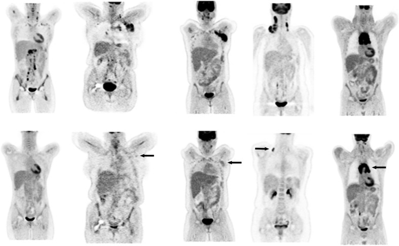
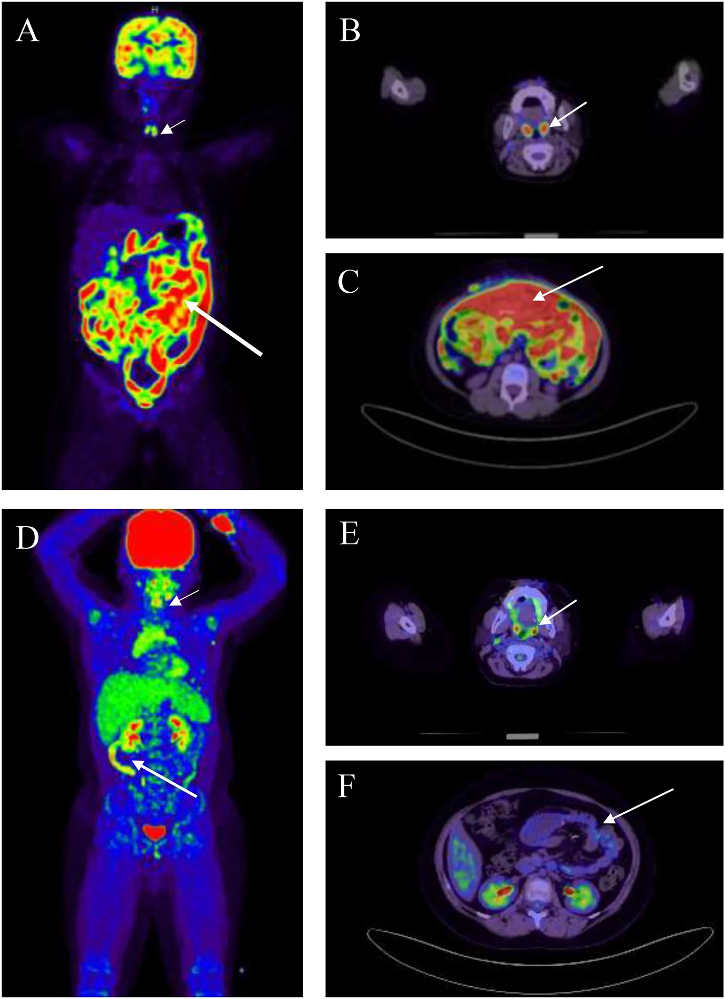

6153 — Vôi hóa hạch tồn dư sau điều trị lymphoma ở trẻ / Calcified residual lymph nodes after childhood lymphoma therapy
Tags: pattern:hach pattern:voi-hoa pattern:ton-thuong-sau-dieu-tri vung:trung-that vung:co score:Deauville protocol:PET-CT protocol:CT-lieu-thap-tre-em incidentaloma:hach-ton-du
Mức chắc chắn (certainty): tổng hợp y văn (literature synthesis) — ghép 1 tổng quan PET/đáp ứng điều trị (Barrington & Kluge, Eur J Nucl Med Mol Imaging 2017, PMC5541086, CC BY 4.0), 1 ca nguyên văn nhi có ảnh (Burkitt hồi tràng + tuyến ức phì đại hồi phục, Front Immunol 2026, PMC13716779, CC BY 4.0), 1 guideline HL 2026 (EHA, PMC13288861) và 1 chuỗi ca lịch sử về vôi hóa hạch sau xạ (Strijk 1985, PMID 4050523). Nhóm không có bệnh nhân của mình; chỗ nguồn không đủ (tỉ lệ vôi hóa hạch ở trẻ sau hóa trị đơn thuần) ghi "chưa rõ", không suy ra.
Câu chốt: sau điều trị lymphoma, khối tồn dư là chuyện thường — vôi hóa càng chứng tỏ mô đã chết — nhưng KHÔNG có nghĩa là khỏi. Ba số phải thuộc: (1) PET âm tính có giá trị tiên đoán âm 90–100% ở Hodgkin, trong khi giá trị tiên đoán dương chỉ 50–100% vì viêm sau điều trị cũng bắt FDG (PMC5541086); (2) vôi hóa hạch sau xạ trị Hodgkin xuất hiện trung bình 3 năm sau điều trị, dạng chấm nhỏ ở trung thất trên, đôi khi hình vỏ trứng, và gắn với tiên lượng tốt (Strijk 1985); (3) quyết định không dựa vào kích thước hay vôi hóa, mà dựa vào thang Deauville 5 điểm: DS 1–3 = đáp ứng chuyển hóa hoàn toàn, DS 4–5 = còn bệnh (EHA 2026).
1. Tổng quan bệnh học – cơ chế hình ảnh
1.1 Vì sao hạch "không về bình thường" dù bệnh đã chết
- Điều trị hiệu quả giết tế bào u → khối u hoại tử → thay bằng mô xơ (fibrosis) và mô mỡ, kèm vôi hóa loạn dưỡng (dystrophic calcification) giống cách u hạt lao lành để lại canxi. Mô xơ không co ngay: khối tồn dư có thể giữ nguyên kích thước nhiều tháng đến nhiều năm rồi teo dần.
- Vì vậy kích thước trên CT không phải thước đo sinh học: một khối 3 cm toàn xơ và một khối 3 cm còn u sống giống nhau trên CT không cản quang. Cái phân biệt là hoạt động chuyển hóa (FDG) và mật độ mô (canxi/mỡ).
- Hệ quả thực hành: ngừng dựa vào "hạch còn to" để nói tái phát; và ngược lại đừng coi hạch vôi hóa là "đã an toàn" khi nó nằm ngoài vùng đã điều trị hoặc mới xuất hiện.
1.2 Vật lý: vì sao canxi "không thể nhầm" trên CT, và vì sao PET "nhìn thấy" phần còn sống
- CT: canxi hấp thụ tia X mạnh → ~100–1.000 HU (điển hình > 200 HU, ngang xương); mô mềm 20–60 HU; mỡ −40 đến −120 HU; thuốc cản quang tĩnh mạch ở thì muộn 80–150 HU nhưng rửa trôi theo thời gian. Vì vậy CT không cản quang là cách rẻ nhất để khẳng định "đây là canxi, không phải thuốc cản quang tồn dư".
- Canxi không có mạch máu, không có tế bào sống → không bắt FDG. Đó là lý do một hạch vôi hóa hoàn toàn thường PET âm — nhưng "âm" ở đây không chứng minh phần mô mềm quanh nó cũng chết.
- FDG vào tế bào qua GLUT1/GLUT3 và bị hexokinase giữ lại dưới dạng FDG-6-phosphate; tế bào u lymphoma có tốc độ đường phân cao nên bắt mạnh. Nhưng đại thực bào và mô hạt viêm sau xạ/hóa trị cũng bắt FDG → đây là nguồn dương tính giả chính, giải thích vì sao giá trị tiên đoán dương thấp hơn nhiều giá trị tiên đoán âm.
- Hiệu ứng thể tích một phần (partial volume): tổn thương nhỏ làm SUV bị đo thấp giả. Trong thử nghiệm phantom, một tổn thương cầu có đường kính 1,5 lần FWHM của máy chỉ cho hoạt độ đo được ~60% hoạt độ thật (PMC5541086). Nghĩa là ổ bệnh còn lại vài mm có thể "âm" giả — đây là lý do kỹ thuật của quy tắc "không sinh thiết mù, phải nhắm ổ ngấm thuốc".
1.3 Hai mốc thời gian quyết định cách đọc phim
- Vôi hóa sau xạ: Strijk 1985 gộp 61 ca trong y văn + 8 ca của tác giả ở Hodgkin sau xạ trị; hình ảnh điển hình là vôi hóa dạng chấm (punctate) ở trung thất trên, đôi khi vôi hóa hình vỏ trứng (egg-shell); thời gian trung bình xuất hiện: 3 năm sau điều trị; tác giả ghi nhận vôi hóa gắn với tiên lượng tốt và sống lâu. Đây là dữ liệu người lớn, thời kỳ xạ liều cao — không được suy ra tỉ lệ cho trẻ sau hóa trị đơn thuần (chưa rõ).
- Thời điểm chụp PET sau điều trị: phải hoãn ít nhất 3 tuần, tốt nhất 6–8 tuần sau hóa trị; 2 tuần sau yếu tố kích thích dòng bạch cầu hạt (G-CSF); 3 tháng sau xạ trị — nếu không, viêm và tủy tăng sinh sẽ giả dương (PMC5541086).
- Tuyến ức phì đại hồi phục (rebound thymic hyperplasia, RTH): gặp ở 51,9–67,7% người sống sót Hodgkin nhi, thường xuất hiện 2–3 tháng sau kết thúc hóa trị, và bắt chước tái phát trung thất cả trên CT lẫn PET (ca Burkitt nhi, PMC13716779).
2. Mẫu hình + chẩn đoán phân biệt theo vị trí (gamut)
- Trung thất — khối tồn dư ở trẻ: xơ/vôi hóa sau điều trị; tuyến ức phì đại hồi phục; lymphoma còn sống; u tế bào mầm/teratoma (có mỡ + canxi + răng); lao/histoplasmosis (hạch vôi hóa); sarcoidosis; thymoma (hiếm ở trẻ).
- Cổ — hạch vôi hóa: hạch sau xạ trị; lao hạch (hay gặp ở Việt Nam, thường kèm canxi "đá tảng"); di căn ung thư giáp thể nhú (vôi hóa dạng "gỗ"/psammoma); u di căn xương–xương (osteosarcoma); nang nhánh mang (vôi hóa thành).
- Mạc treo/ổ bụng: hạch sau điều trị lymphoma; u carcinoid mạc treo (khối canxi hóa + tua xơ tỏa tia + kéo co mạc treo); di căn ung thư biểu mô tuyến nhầy; GIST sau imatinib (thoái triển thành nang, có thể canxi hóa); lao mạc treo.
- Mnemonic hạch vôi hóa — "STTLA": Silicosis (vỏ trứng), TB/histoplasmosis, Treated lymphoma/RT, Lymphoma đang hoạt động (hiếm, sau xạ), Amyloid/ Adenocarcinoma nhầy – cộng thêm di căn giáp/osteosarcoma ở trẻ. Vỏ trứng một mình không loại trừ được gì: nó chỉ nói "canxi ở vỏ hạch".
3. Bảng so sánh phân biệt (ma trận đối chiếu)
| Thực thể (entity) | Hình ảnh điển hình | Chốt vào (rule-in) | Chốt loại (rule-out) | Gợi ý xác nhận |
|---|---|---|---|---|
| Xơ/vôi hóa sau điều trị | Khối tồn dư teo dần, canxi dạng chấm hoặc vỏ trứng trong vùng đã xạ; PET âm | Canxi trong đúng vùng đã điều trị + PET DS 1–3 + không nốt mới | Canxi ở hạch mới hoặc ngoài trường xạ → không phải di chứng | So phim cũ, PET/CT muộn 6–8 tuần; theo dõi 3–6 tháng |
| Tái phát thật | Hạch to lại, có thể không canxi, ngấm FDG > gan; vị trí mới | DS 4–5 + hạch mới/to lên theo thời gian | Canxi hóa đậm đặc toàn bộ + PET âm không loại trừ hoàn toàn nếu hạch nằm ngoài trường xạ | Sinh thiết ổ ngấm mạnh nhất (không lấy phần vôi hóa) |
| Tuyến ức phì đại hồi phục | Khối tam giác/hình cánh ở trước mạch lớn, 2–3 tháng sau hóa trị; có thể DS 4 | Hình dạng tuyến ức + đối xứng + đúng cửa sổ thời gian | Xâm lấn màng phổi, hạch rời, nốt trong phổi → không phải RTH | MRI (mô tuyến ức), theo dõi 3 tháng; sinh thiết chỉ khi không thể phân biệt |
| U tế bào mầm/teratoma | Khối trung thất trước có mỡ (âm HU) + canxi + răng/xương, có thể vôi hóa thành vỏ | Ba thành phần mỡ–canxi–dịch trong một khối | Khối đặc đồng nhất không mỡ, không canxi → nghĩ lymphoma/xơ | AFP/β-hCG, CT/MRI, sinh thiết |
| Lao/histoplasmosis hạch | Hạch vôi hóa đá tảng/vỏ trứng, thường hai bên rốn phổi; có thể kèm đông đặc | Canxi + hạch rốn phổi + dịch tễ + IGRA (+) | Canxi đơn độc trong trường xạ cũ → nghĩ di chứng điều trị | IGRA, nhuộm AFB/PCR nếu còn hạch mềm |
| Di căn vôi hóa (giáp nhú, osteosarcoma, tuyến nhầy) | Canxi dạng psammoma/"gỗ", hoặc canxi dạng xương ở nốt phổi/hạch | Tiền sử ung thư + nốt canxi MỚI + tăng kích thước | Canxi cũ, ổn định nhiều năm, đúng vùng xạ | So phim cũ; PET; sinh thiết nếu tăng |
| Carcinoid mạc treo | Khối canxi hóa trung tâm + tua xơ tỏa tia, kéo co mạc treo, có thể xoắn ruột | Canxi trung tâm + tua tỏa tia + co kéo | Canxi rải rác nhiều hạch không tua → nghĩ di chứng/lao | Chromogranin A, 5-HIAA, CT bụng có cản quang |

Năm cột từ trái sang phải là Deauville 1 → 5 (mũi tên: ổ còn ngấm). Cùng một bệnh nhân, "khối còn lại" chỉ được gọi là bệnh khi cường độ ngấm so với gan vượt ngưỡng — không phải khi còn thấy bóng. Nguồn: Barrington & Kluge, Eur J Nucl Med Mol Imaging 2017, PMC5541086, CC BY 4.0. Ảnh nguyên bản.4. Protocol chụp + hệ phân độ chuẩn hóa
4.1 PET/CT ở trẻ — các bước không được rút gọn
- Nhịn ăn 4–6 giờ, đường huyết < 11 mmol/L (nếu cao hơn, FDG cạnh tranh với glucose → giảm nhạy); phòng ấm để giảm mô mỡ nâu.
- FDG 3–5 MBq/kg (tối thiểu ~37 MBq), nằm yên 60 phút, đi tiểu trước chụp.
- CT liều thấp theo cân nặng chỉ để hiệu chỉnh suy giảm (attenuation correction) và định vị — không thay CT chẩn đoán; ở trẻ cần ALARA: giảm kVp/mAs theo cân nặng, giới hạn trường chiếu.
- Đo chuẩn: đặt ROI/VOI gan phải 30 mL (khối 2:2:1), trung thất tại quai động mạch chủ — tránh thành mạch và tránh vùng canxi vì canxi làm sai hệ số suy giảm (PMC5541086).
- Thời điểm: ≥ 3 tuần (tốt nhất 6–8 tuần) sau hóa trị; 2 tuần sau G-CSF; 3 tháng sau xạ.
4.2 Thang Deauville 5 điểm (5-PS) — ngưỡng hành động
| Điểm | Định nghĩa | Ý nghĩa |
|---|---|---|
| 1 | Không ngấm trên nền | Đáp ứng chuyển hóa hoàn toàn (CMR) |
| 2 | Ngấm ≤ trung thất | CMR |
| 3 | Ngấm > trung thất nhưng ≤ gan | CMR |
| 4 | Ngấm trung bình > gan | Còn bệnh (cân nhắc sinh thiết/theo dõi sát) |
| 5 | Ngấm mạnh > gan và/hoặc tổn thương mới | Còn bệnh |
- DS ≤ 3 = CMR theo EHA 2026; DS ≥ 4 là PET dương trong đánh giá giữa liệu trình.
- Lugano 2014 (Cheson): đáp ứng hoàn toàn về CT đòi hỏi hạch đích ≤ 1,5 cm đường kính ngang (LDi); nhưng khi có PET, khối tồn dư kích thước bất kỳ mà PET âm vẫn được xếp CR — đây chính là lý do vôi hóa/khối to không còn là tiêu chuẩn thất bại.
- Vì sao vẫn phải cân nhắc xạ trị ở trẻ: ở bệnh nhân PET âm sau hóa trị, bỏ xạ làm giảm kiểm soát bệnh trong các thử nghiệm ngẫu nhiên: HD16 5 năm PFS 86,1% (hóa trị đơn thuần) so với 93,4% (hóa trị + xạ), RAPID 90,8% vs 94,6%, H10F 87,1% vs 99% (PMC13288861). Nghĩa là "PET âm" không đồng nghĩa bỏ được xạ — quyết định theo phác đồ và nguy cơ tích lũy.
flowchart TD
A[Khối/hạch tồn dư sau điều trị lymphoma ở trẻ] --> B{PET/CT đúng thời điểm?<br/>≥3 tuần sau hóa trị, ≥3 tháng sau xạ}
B -->|Chưa| C[Hoãn chụp lại — tránh viêm giả dương]
B -->|Rồi| D{Deauville}
D -->|DS 1-3| E[CMR: không sinh thiết khối tồn dư<br/>theo dõi CT/MRI 3-6 tháng]
D -->|DS 4| F[Theo dõi sát hoặc sinh thiết ổ ngấm mạnh nhất]
D -->|DS 5 / tổn thương mới| G[Sinh thiết + tái phân giai đoạn<br/>không lấy phần vôi hóa]
E --> H{Canxi mới ngoài vùng xạ?}
H -->|Có| I[Không quy cho di chứng — tìm di căn/lao]
H -->|Không| J[Ghi nhận di chứng, hẹn khám định kỳ]
5. Biến thể bình thường và cạm bẫy
- Tuyến ức trẻ em "bình thường" có thể dày, hình cánh; sau hóa trị lại phì đại hồi phục — đừng gọi tái phát trung thất trong 2–3 tháng đầu. Ca Burkitt nhi (PMC13716779) cho thấy RTH có thể bắt chước tái phát và buộc sinh thiết khi hình ảnh không phân định được.
- Canxi làm hỏng ảnh PET: hạch vôi hóa gây sai lệch hiệu chỉnh suy giảm trên PET/CT, tạo ổ tăng hoặc giảm hoạt độ giả (Mehta 2010, J Radiol Case Rep, 3 ca). Cách tránh: luôn xem ảnh không hiệu chỉnh (non-AC) và đặt ROI tránh canxi.
- Partial volume: ổ bệnh < 2 lần FWHM (với máy thường ~4–6 mm) bị đo thấp SUV — một "DS 2" ở hạch 5 mm có thể là âm giả (PMC5541086).
- Sinh thiết đúng chỗ: lấy phần mô mềm ngấm FDG nhất, không lấy nhân vôi hóa (kim vào canxi chỉ ra "mô xơ/không đủ mẫu" → kết luận sai là "không có u").
- Vôi hóa KHÔNG phải giấy chứng nhận khỏi bệnh: canxi trong hạch mới xuất hiện hoặc ngoài trường xạ phải coi như di căn cho đến khi chứng minh ngược (giáp nhú, osteosarcoma, tuyến nhầy).
- Cạm bẫy "hài lòng với tìm kiếm": đã thấy khối tồn dư lớn thì dễ bỏ qua nốt nhỏ ở phổi/gan — phải đọc toàn thân MIP trước khi kết luận.
6. Tự lượng giá — Blind Quiz
Ca 1 — Năm bệnh nhân lymphoma, PET toàn thân cùng một thang. Nhìn hàng dưới rồi mô tả trước khi mở đáp án.
- Gợi ý: không có lâm sàng kèm theo — đây là bài tập hiệu chuẩn mắt.
- Hỏi: cột thứ tư khác cột thứ năm ở đâu? Vì sao mốc so sánh là gan chứ không phải trung thất?
Bấm để hiện đáp án (findings + chẩn đoán)
- Cột 1–3: từ không ngấm → ngấm ≤ trung thất → ngấm > trung thất nhưng ≤ gan = DS 1, 2, 3 (đều là CMR).
- Cột 4: ngấm trung bình trên gan (mũi tên) = DS 4 — vùng xám, phải tương quan lâm sàng/sinh thiết.
- Cột 5: ngấm mạnh hơn gan rõ rệt, có ổ mới (mũi tên) = DS 5.
- Tại sao lấy gan làm mốc: gan là cơ quan có hoạt độ FDG ổn định, ít thay đổi theo điều trị; trung thất chỉ dùng cho ngưỡng thấp (DS 2–3). Dùng gan làm mốc giúp giảm khác biệt giữa người đọc và giữa máy (PMC5541086).
- Nguồn ảnh: Barrington & Kluge, Eur J Nucl Med Mol Imaging 2017, PMC5541086, CC BY 4.0.
Ca 2 — Bé trai 11 tuổi, Burkitt lymphoma hồi tràng, sau 8 chu kỳ hóa trị. So sánh PET trước (A–C) và sau điều trị (D–F).

- Hỏi: hạch cổ còn thấy trên ảnh sau điều trị (E) — có phải tái phát? Deauville mấy điểm? Có cần sinh thiết?
Bấm để hiện đáp án (findings + chẩn đoán)
- Trước điều trị: (A) hạch cổ hai bên ngấm mạnh (mũi tên ngắn), (C) ổ ngấm lan tỏa trong mạc treo/ruột non (mũi tên dài).
- Sau điều trị: (D) MIP gần như sạch; (E) còn ngấm nhẹ, đối xứng, SUVmax 2,1 ở vùng hạch cổ cũ — ngang hoạt độ nền sinh lý; (F) không còn ổ tăng chuyển hóa trong ổ bụng.
- Kết luận: Deauville 1 — đáp ứng chuyển hóa hoàn toàn. Hạch còn "bóng" trên CT không phải tái phát; không sinh thiết, tiếp tục theo dõi.
- Phản biện (theo PROMPT_SYNTHESIZER mục 3): đây là Burkitt, không phải Hodgkin — nhưng nguyên lý "khối tồn dư + PET âm = CR" áp dụng cho cả NHL tiến triển (Lugano 2014). Ca này còn cho thấy tuyến ức phì đại hồi phục xuất hiện sau đó và bắt chước tái phát trung thất, buộc sinh thiết trong bối cảnh mơ hồ — đúng cạm bẫy của bài.
- Nguồn ảnh: Lin M và cs., Front Immunol 2026;17:1910294, PMC13716779 Fig. 2, CC BY 4.0. Ảnh nguyên bản.
Bài liên quan chéo
- 046 – Tái phân giai đoạn trung thất sau hóa–miễn dịch & bệnh hạch tồn dư
- 012 – Hạch trung thất IASLC & mốc giải phẫu
- 1828 – Vôi hóa não sau xạ trị ở trẻ
- 600 – Tổng quan Hệ Nhi khoa
Không dùng để chẩn đoán độc lập khi chưa có người hướng dẫn.